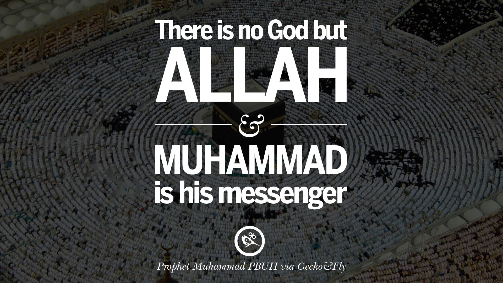
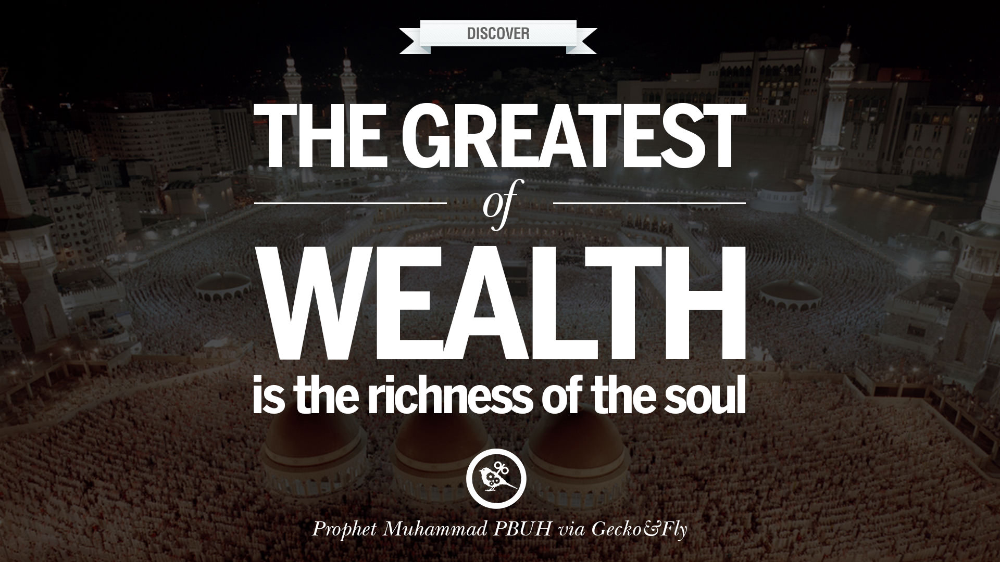

The orphan
Muhammad was born in 570 in Mecca, modern day Saudi Arabia, to a single mother whose husband died before she gave birth. Muhammad was of noble blood, and it was the custom for those children of higher social standing to have a wet nurse. A Bedouin woman named Halima cared for him, and took him into the harsh desert to live with her people. For such a young child it was a challenging environment. But it was here that Muhammad would develop his first close connection with nature, and spend most of his time in solitude contemplating the world around him. He returned to his mother, Amina, who took him to visit his father’s grave, but on the return journey she fell dangerously ill. Muhammad was barely six years old when he faced the loss of another parent. Later his own experience would help him to encourage compassion for orphans, telling his companions that kindness shown to parentless children would grant them Paradise.

The shepherd and the businessman
Muhammad went to live with his grandfather Abdul Muttalib, and spent two happy years with him, until he died when Muhammad was eight years old. Again he had to face emotional and physical upheaval, moving to live with his uncle Abu Talib. As a young boy, Muhammad earned his living as a shepherd, a role he was later to speak about with fondness: “All the prophets of God were shepherds”. Later he would become renowned for his honest dealing with people in business and trade.
The husband
A wealthy businesswoman named Khadijah requested Muhammad’s expertise in negotiating a business venture for her. When she heard of how he secured more than she expected, she was impressed and made enquiries about his character. On hearing the accounts of his generous and noble nature, she sent a proposal to the 25 year old man. Khadijah was a widow some fifteen years older than Muhammad, and had children from two previous marriages; she was intelligent, independent and kind. Muhammad accepted her offer. Khadijah and Muhammad’s marriage was a happy and harmonious one: they consulted, supported and cared for each other in equal measure. She was his first love, the first he turned to for support, and the first to acknowledge his prophethood. They had four daughters together who they cherished, and two sons, but they tragically both died in infancy.

The Revelation
Muhammad had always treated those around him with honour, kindness and respect. Yet he was troubled. Troubled by the injustices he saw around him of backward tribal practices – of female infanticide, of oppression of the vulnerable and of inequality. He had distanced himself from ignorance, superstition and the practice of idol worship. He often retreated to a cave on the mountain of Hira to reflect, wondering what he could do to change such deep-rooted customs. The cave on Mount HiraIt was now 610, Muhammad was only aged forty but at a point in his life where he had already faced great sorrows: losing both his parents at an early age, his grandfather and two young sons. One night, when he again went to the secluded cave to be alone with his thoughts, he encountered an experience that would dramatically change his life, his society and the wider world. “Read!” a voice called out him. It was the angel Gabriel. Muhammad was frightened but responded he could not read – indeed he did not know how to read or write. Again Gabriel commanded him to read, and a third time said “Read! In the name of your Sustainer. He who taught man by the pen that which he did not know.” Following this divine visitation, Muhammad went immediately to the only person he could relate what had happened and find solace in: his wife. He was shaking violently from the experience; Khadijah wrapped him in a covering and comforted him. This was the first of many revelations that would come to him over a period of twenty three years.
The Message
Door of the Prophet's MosqueGod had chosen Muhammad as his final messenger, the last in a line of many prophets before him, like Abraham, Moses, Joseph, and Jesus. All had brought the message of worshipping One God, of enjoining good and forbidding bad. But this message had become corrupted by men, and the moment had come once more to bring people back towards the truth. The Quran emphasised the belief in the Oneness of God, related the creation of the heavens and the earth, stories of past prophets, the equality and sanctity of humanity, and the etiquettes of human behaviour.
Trials
Muhammad had a great task ahead of him. In preaching God’s word, he would come face to face with rejection, abuse, humiliation and even banishment from his own people. He had to overturn his society’s backward practices, instructing them to embrace a set of universal principles that would unite all the tribes, provide a benchmark for justice, would eradicate racism, encourage them in acts of charity, protect the vulnerable, abolish the rigid class system, raise the status of women to an honoured position, and bring everyone back to the belief in one God. But the leading tribe of the Meccans, the Quraysh, were staunch in their opposition. Muhammad had a small group of companions who believed in his message, and these supporters would be targeted by the Quraysh who embarked on a campaign of torture. The first to die for Islam was a woman named Sumayyah, who after enduring the cruelty inflicted on her, was finally stabbed to death. She is a woman held in high esteem by Muslims for her steadfastness and strength of character, and one of the few guaranteed Paradise.
Refuge
It was now 615 and the situation for the Muslims had not improved. Muhammad heard of a just and compassionate ruler in Abyssinia, a Christian king who might offer refuge for the Muslims and sent 100 Muslim men and women to be placed under the king’s protection. Muhammad did not hesitate to turn to those of other faiths for their protection, he trusted and worked with others who had moral standing and dealt with justice no matter what their faith or background. His own uncle, Abu Talib, whom he loved and respected greatly was not a Muslim, but he offered invaluable support to his nephew.
Exile
The Quraysh, unable to break this small but growing band of Muslims, who were growing in number by the day, resorted to banishing them, forbidding any tribes to help them. Tribes depended on each other for sustenance, trade and protection in the harsh desert environment, so this embargo would mean starvation, deprivation and vulnerability. The embargo went on for three years, during which Muhammad and his companions retreated to the valleys surrounding Mecca to live a very difficult life. The ban was finally lifted, but it had taken its toll on the Prophet’s beloved wife, Khadijah. She died soon afterwards in a year known as The Year of Sorrow. Muhammad’s grief was deep. He had lost his strongest supporter and confidante, the mother of his children. The same year, his uncle, who had been his protector, died in 620. Yet his mission was far from over, and he had the duty to continue his message and to protect those who had gathered around him. He thought of moving the Muslims far away from the relentless oppression of the Quraysh.
Night Journey
Every prophet has his miracle, and it is said that the Quran was Muhammad’s miracle. Yet the Night Journey joins the many miraculous stories about prophets before him – of Jesus’ birth, of Jonah and the Whale, of Moses’ parting of the Red Sea. Two years after the death of Khadijah, one evening Muhammad fell asleep by the Kaba and was awoken by the angel Gabriel who showed him a white, winged horse. They both mounted and began the journey to Jerusalem where he met a group of prophets; amongst them were Abraham and Moses. Muhammad led them in prayer at the Temple Mount. Then Muhammad again mounted the winged creature with Gabriel and went on a journey that transcended time and space through the seven heavens. It was at the highest level that he received instructions for the five daily prayers. Muhammad was profoundly affected by this spiritual and physical journey, seeing the wonders of the heavens, and meeting the brotherhood of prophets. Yet it was also a trial – when Muhammad recounted his experience, it left him open to more insults and jeers. Yet the lesson remained that true faith meant belief in the unseen and in the miracles of God.
marriage
It was the norm in Arabia for men to take many wives, but Muhammad remained monogamous to his first wife Khadijah throughout their marriage. A year after her death, he was encouraged to marry again. His subsequent marriages were formed for various reasons: to form alliances with other tribes in order to secure the survival of the Muslim community, to protect those who were threatened because of their faith, and to cement friendships. Many of his wives were widows with children, or divorcees. Aisha was the daughter of his closest friend Abu Bakr. Her marriage to Muhammad was arranged when she was very young, but their marriage was not consummated until she entered puberty. Aisha had an incredible intellect, and she became a respected scholar and was skilled in medical knowledge. She spoke of Muhammad’s kindness and generosity to all his wives, a quality that he insisted upon from every husband to their spouse.
Migration
The number of Muslims was growing, and along with it grew the need to live free of tyranny. Many people had embraced Islam in the city of Medina, some 200 miles from Mecca. Muhammad decided his companions should relocate to where they would enjoy the freedom of religious expression and the confidence of a being a real community. Agreements were made with the Jews, Christians and pagans of Medina, and all lived in protection, liberty and coexistence.
Conflict
The move was a blow to the pride of the Quraysh who still tormented the few Muslims who remained in Mecca. In addition to their persecution, they confiscated all their property and belongings to show Muhammad that he had not won. Incensed by news of this, Muhammad organised expeditions on Meccan caravans in order to take compensation. He also sent missions to find out information of the Quraysh’s plots – he knew that an attack was likely. Yet one mission resulted in the death of a Quraysh leader despite Muhammad’s clear instruction that no conflict was to take place. A clash was imminent. For the past thirteen years until this point, the Muslims were instructed in passive resistance, but a revelation now gave permission to fight those who oppressed them and had driven them from their homes. Muhammad had set off with over three hundred Muslims to intercept a caravan in order to take more goods in compensation, but the Quraysh found out about his plans and sent a thousand-strong army. The Muslims were not prepared for war, but they were determined to face their enemies. They won an incredible victory in what came to be known as the Battle of Badr. The conflict was not at an end however, and more wars took place between the Quraysh, their allies and the Muslims, the latter suffering many losses. Muhammad now had military and political power, sending a strong message that he and his people would not be trampled upon any further. As his influence increased, so too did attempts to assassinate him.
Conquest
After years of hostility, power shifted towards Muhammad and the Muslims, and a treaty was finally agreed between the Quraysh and Muhammad, but this was violated by the former and Muhammad marched on Mecca in 630. But he took Mecca without bloodshed, peaceably and with dignity. Muhammad was in a position of power to seek revenge on those who had tortured and persecuted the Muslims, but he did not abuse his power, choosing instead to conquer Mecca with profound humility. His great mercy and compassion deeply impressed the tribes of Mecca, and a great number embraced Islam.
The Farewell Pilgrimage
Muhammad, accompanied by one hundred thousand of his companions, performed the final pilgrimage of his life to the Kaba in Mecca. Standing on what is known as the Mount of Mercy, he delivered his last speech with messages that would resound through time. He spoke of the equality of humankind, of women’s rights, of fraternity, of doing good, of never oppressing anyone, of human rights and justice.
Final breath
Soon after the farewell sermon, Muhammad fell very ill with a fever which weakened him greatly. Though frail, he led his last prayer in the mosque in Medina, and repeated again and again that the poor and the vulnerable must be treated well. His final moments were with his wife Aisha. He rested his head in her lap while she stroked his head. Suddenly she felt his head become heavier. He had breathed his last breath. He died in 632 aged sixty three.
Legacy
Muhammad caused a revolution in the space of twenty three years, shaping the course of history. His commitment to the enduring values of justice, freedom, fraternity, charity and equality carried a universal message that prevails to this day. What began as a small band of followers in seventh century Arabia has now grown to a global community of 1.5 billion, a fifth of the world’s population. Muslims everywhere model their own lives on his behaviour, from prayer to politics, personal hygiene to community involvement. This one man continues to inspire millions of lives fourteen centuries after he lived.

Rafsun Sheikh
Lieutenant at Bangladesh Military Academy. Commissioned with 76 BMA Long Course at December,2018. Completed BSc in Military Science in the same year. And possess a great interest in Military History.
Leave a comment